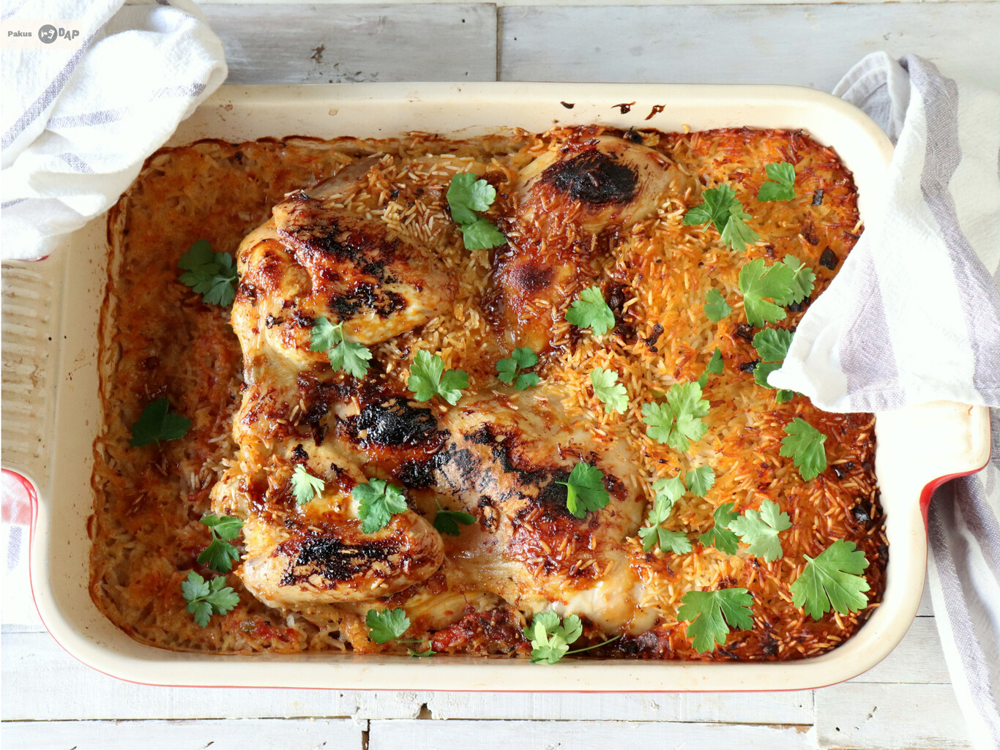

Recetas de cocina - CARNE
INICIO
CARNE
PESCADO
Chicken Diane

Lista de ingredientes
- 6 Contramuslos de pollo deshuesados
- 100 g Champiñones laminados
- 100 ml Nata líquida para cocinar
- 1 Cucharada de mostaza a la antigua
- 1 Chorrito de coñac
- Sal y pimienta al gusto
- Perejil picado al gusto
- 250 ml Caldo de pollo
- 1 Chorrito salsa Worcestershire o Perrin's
- 1 Chorrito zumo de limón
Pasos a seguir:
- Salpimentamos bien los filetes de contramuslo por ambas caras y los freímos en una cazuela con aceite, donde luego haremos el resto de la receta sin manchar nada más. Doramos bien por todas las caras los trozos de pollo y los reservamos en un plato.
- En la misma cacerola, sin limpiar nada, agregamos los champiñones, que doramos bien. Tras un ratito, agregamos la cebolla picada y un chorreón de coñac o brandy. Seguidamente añadimos la crema fresca (o nata) y la mostaza antigua, mezclando bien y dejando que el conjunto se cocine. Agregamos un vaso de caldo de pollo, el zumo de limón y la salsa Perrin's y dejamos cocinar. Después añadimos perejil muy picado.
- Retornamos las tajadas de pollo al guiso y dejamos que el conjunto cueza durante 15 minutos más, hasta que queden bien tiernas. Servimos dos o tres filetes en cada plato, cubriendo con los champiñones y la salsa.
Ir a la receta original
Tbeet de pollo y arroz

Lista de ingredientes
- 1 Pollo entero abierto por el pecho
- 2 tazas Arroz basmati
- 1 Tomate
- 1 Cebolla
- 1 cucharadita Comino molido
- 1 cucharadita Sumac o Zumaque
- 3 cucharadas Tomate concentrado
- 1 cucharada Sirope de arce
- Especias al gusto
- 1/2 cucharada Pimienta negra molida
- 1 cucharada y 1/2 Sal
- 500 ml Agua
- 3 Dientes de ajo
- Cebolleta picada
- Perejil fresco para decorar
Pasos a seguir:
- Cortamos el tomate y la cebolla en rodajas y los ponemos en la base de una fuente de horno. Salpimentamos el pollo por dentro y lo ponemos sobre el tomate y la cebolla, con la piel arriba, añadiendo seguidamente el arroz basmati por encima y en los laterales de la fuente.
- Preparamos la salsa poniendo en un bol el ajo, lo verde de una cebolleta, y seguidamente vamos añadiendo las especias, el sirope, la pasta de tomate concentrado y el agua, mezclando bien todo. Lo vertemos con cuidado por encima del pollo y tapamos la fuente, primero con un papel de hornear humedecido y después con papel aluminio.
- Horneamos a 200ºC durante una hora y media. En ese tiempo el pollo se cocina y el arroz se cuece al vapor y después se seca quedando en una textura muy interesante. Pasada la hora y media, destapamos y gratinamos unos minutos, antes de llevar a la mesa. Decoramos con hojitas de perejil fresco.
Ir a la receta original